Quick sketch

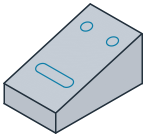
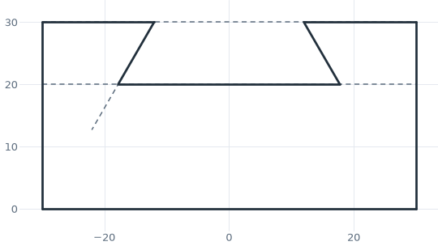
A sketch draws a profile from lines, arcs, circles and splines. An element can be placed by coordinates, but usually it is placed by its relation to what is already drawn: a line ends where it meets an edge, runs parallel to another line or at an angle to it, or touches a circle. planex2d computes the intersections and touch points, so none of them has to be worked out by hand. A full circle is one exact edge, with no vertices on it.
Profile tools draw common shapes in one call: rectangles, slots, keyholes, polygons, fillets and chamfers. Construction elements and points help to place the geometry without becoming part of the part. Every element gets an id, so later calls can refer to it, and trimming, offsets, mirroring and patterns finish the drawing. The result is wires, faces and shapes on any plane in 3D, ready for Boolean operations and export.
This section uses px.QuickSketch, which places every element once and keeps it as drawn, so it stays fast even for thousands of elements. px.Sketch has the same drawing calls and adds constraints and dimensions, so the design follows when a value changes. See Constraint sketches for details.
In this section
Drawing
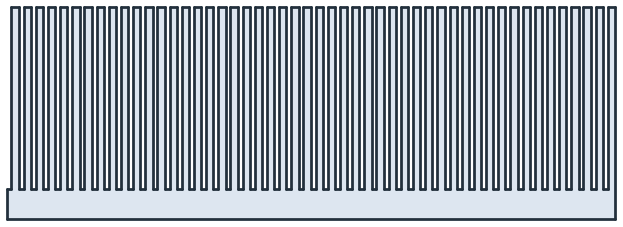
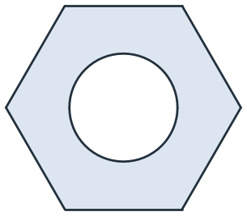
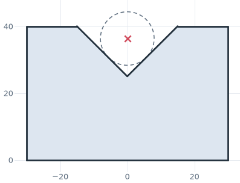
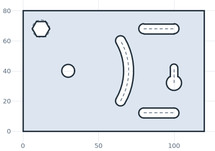
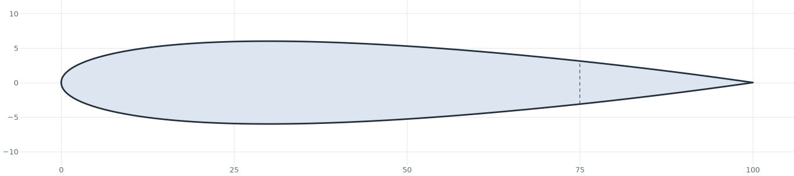
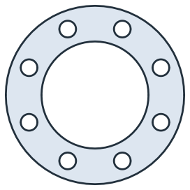
References
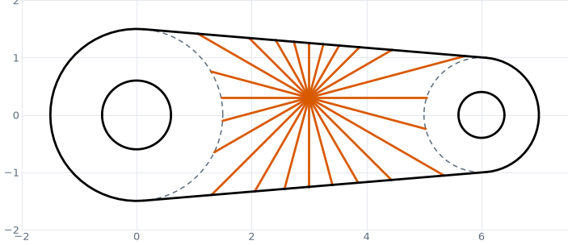
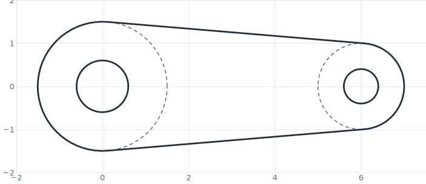
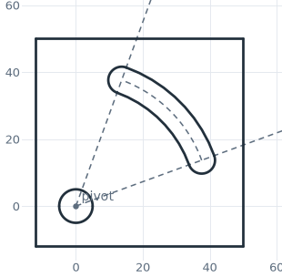
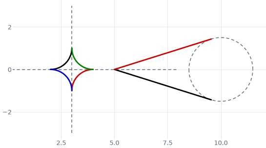
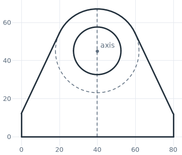
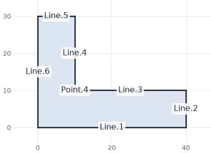
Editing
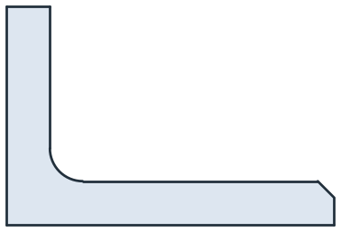
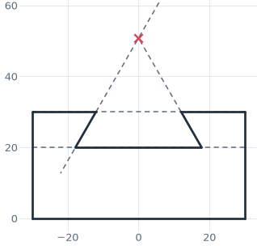
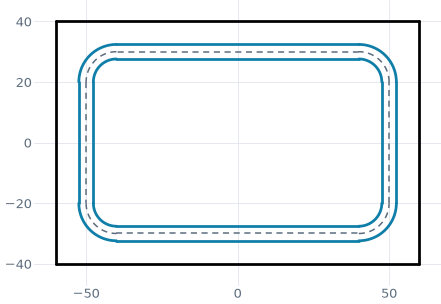
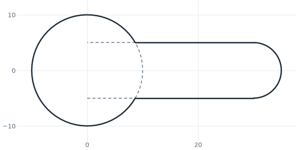
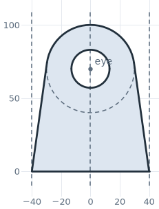
Placement
Design
Everything at a glance
Sketches |
|
Draw |
|
Move the pen |
|
Lines |
|
Arcs |
|
Circles |
|
Rectangles |
|
Ready-made shapes |
|
Targets |
Ids, |
Ids |
Automatic ids such as |
Construction |
|
Offsets |
|
Edit |
|
Motions |
|
3D geometry |
|
Properties |
|
Plane |
|
Results |
|